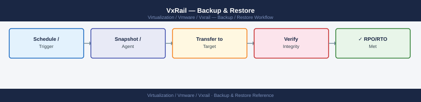

VxRail — Backup & Restore¶

Before you begin¶
- Access: vCenter read-only minimum; Administrator role for remediation steps
- Timing: safe to run during business hours unless a step is marked ⚠ (causes interruption)
- Dependencies: no active upgrades or migrations on the same infrastructure
- Logging: capture command output — paste into the change record on completion
VxRail Manager VM Backup¶
VxRail Manager is a Linux appliance VM running on the first VxRail node. It holds:
- Cluster configuration and topology data
- Node inventory and health history
- LCM bundle metadata and upgrade history
- vCenter plugin state and credentials
If VxRail Manager is lost without a backup, the cluster continues to run but LCM upgrades, node expansion, and VxRail Plugin functionality are unavailable until VxRail Manager is restored or redeployed.
Veeam Backup Policy¶
Back up the VxRail Manager VM as you would any other critical infrastructure VM:
- Frequency: Daily
- Retention: 14 recovery points (14 days)
- Target: External backup repository (not on the same vSAN cluster being backed up)
- Application consistency: Veeam guest agent not required — file-system quiesce is sufficient
In Veeam Backup & Replication: add the VxRail Manager VM to a backup job with the above schedule. VxRail Manager does not need to be shut down for backup.
Pre-LCM Snapshot (Temporary Safety Net)¶
Before starting an LCM upgrade, take a snapshot of the VxRail Manager VM as a quick rollback point:
vCenter → VxRail Manager VM → Snapshots → Take Snapshot
Name: "Pre-LCM-<bundle-version>-<date>"
Description: "Pre-upgrade snapshot before LCM to <version>"
Critical: Delete this snapshot within 24 hours of a successful upgrade. Active snapshots on VMs backed by vSAN degrade vSAN performance and can cause rebuild storms if left active.
# PowerCLI — take a pre-LCM snapshot
$vm = Get-VM "VxRail-Manager"
New-Snapshot -VM $vm -Name "Pre-LCM-7.0.401-$(Get-Date -Format 'yyyyMMdd')" `
-Description "Pre-upgrade snapshot — delete within 24h" -Quiesce $false -Memory $false
# Delete the snapshot after confirming upgrade success
Get-Snapshot -VM $vm | Where-Object {$_.Name -like "Pre-LCM-*"} | Remove-Snapshot -Confirm:$false
ESXi Host Configuration Export¶
Export each VxRail node's ESXi configuration bundle before LCM upgrades or node replacement. This bundle captures the host's networking, storage, and advanced settings — it can be used to restore a replacement node to the same configuration.
# Connect to vCenter
Connect-VIServer -Server vcenter.example.local -Credential (Get-Credential)
# Export configuration bundle for each VxRail node
$nodes = @(
"vxrail-node-01.example.local",
"vxrail-node-02.example.local",
"vxrail-node-03.example.local",
"vxrail-node-04.example.local"
)
$destPath = "C:\backups\vxrail\esxi-config"
New-Item -ItemType Directory -Force -Path $destPath | Out-Null
foreach ($node in $nodes) {
$host = Get-VMHost $node
$destFile = Join-Path $destPath "$($node.Split('.')[0])-$(Get-Date -Format 'yyyyMMdd').tgz"
Get-VMHostFirmware -VMHost $host -BackupConfiguration -DestinationPath $destPath
Write-Host "Exported: $node → $destFile"
}
Store the exported .tgz files on an off-cluster location (NAS, SFTP server, or backup repo — not on the vSAN datastore being protected).
vCenter File-Based Backup (VAMI)¶
VxRail Manager does not handle vCenter backup. vCenter must be backed up separately via the VAMI (vCenter Appliance Management Interface).
VAMI URL: https://<vcenter-ip>:5480
For VxRail clusters with embedded vCenter: this is the only supported backup method. Embedded vCenter cannot be backed up via Veeam or snapshot in the same way as external vCenter.
Configure VAMI Backup Schedule¶
URL: https://<vcenter-ip>:5480
Navigate: Backup → Configure
Protocol: SFTP
Location: sftp://<backup-server>/vcenter-backups/
Username: <sftp-username>
Password: <sftp-password>
Frequency: Daily
Time: 02:00 (off-peak window)
Retain: 14 backups
Encrypt: Yes (set a passphrase — record it securely)
Verify the backup schedule is running: VAMI → Backup → Backup Status — the last backup timestamp should match the scheduled time.
Validate VAMI Backup¶
Periodically confirm backup files are present on the SFTP target:
# List recent vCenter backup directories on SFTP target
ls -lth /vcenter-backups/ | head -20
# Each successful backup creates a directory with timestamp
# Example: 2026-06-01_02-00-00
total 2847
drwxr-xr-x 4 root root 4096 Jun 1 02:00 2026-06-01_02-00-00
drwxr-xr-x 4 root root 4096 May 31 02:00 2026-05-31_02-00-00
drwxr-xr-x 4 root root 4096 May 30 02:00 2026-05-30_02-00-00
drwxr-xr-x 4 root root 4096 May 29 02:00 2026-05-29_02-00-00
drwxr-xr-x 4 root root 4096 May 28 02:00 2026-05-28_02-00-00
drwxr-xr-x 4 root root 4096 May 27 02:00 2026-05-27_02-00-00
drwxr-xr-x 4 root root 4096 May 26 02:00 2026-05-26_02-00-00
drwxr-xr-x 4 root root 4096 May 25 02:00 2026-05-25_02-00-00
Common errors
| Error | Fix |
|---|---|
ls: cannot access '/vcenter-backups/': No such file or directory |
Verify the SFTP target mount point exists and is mounted with mount | grep vcenter-backups. |
ls: cannot open directory '/vcenter-backups/': Permission denied |
Check directory permissions with stat /vcenter-backups/ and ensure your user has read access. |
Restore Considerations¶
If VxRail Manager VM is Lost¶
- Cluster continues operating — ESXi, vSAN, and VMs continue to run without VxRail Manager
- Restore from Veeam backup — restore the VxRail Manager VM to the same cluster using Veeam Instant Recovery or a full VM restore
- If backup is unavailable — contact Dell Support to redeploy VxRail Manager from scratch. This requires the cluster serial number and Dell support credentials. Redeployment does not affect running VMs or vSAN data.
- After restore — log in to VxRail Manager and verify the plugin reconnects to vCenter. Check that node inventory is populated and LCM shows the correct current version.
# Verify VxRail Manager has reconnected after restore
curl -sk \
-H "Authorization: Basic $(echo -n 'mystic:password' | base64)" \
"https://<vxm-ip>/rest/vxm/v1/cluster" | python3 -m json.tool
{
"id": "cluster-1",
"name": "VxRail-Cluster-01",
"version": "7.0.510-26041961",
"health": "Healthy",
"state": "Connected",
"nodes": 4,
"capacity_gb": 12288,
"used_gb": 8456,
"last_refresh": "2024-01-15T14:32:18Z",
"manager_ip": "192.168.1.100",
"manager_status": "Online",
"interconnect_status": "Connected",
"vsan_health": "Healthy",
"replication_factor": 3
}
Common errors
| Error | Fix |
|---|---|
curl: (7) Failed to connect to <vxm-ip> port 443: Connection refused |
Verify VxRail Manager is fully booted and accessible; check network connectivity with ping <vxm-ip> and confirm HTTPS service is running. |
{"error": "Invalid credentials", "code": 401} |
Verify the base64-encoded username and password are correct by decoding with echo 'bXlzdGljOnBhc3N3b3Jk' | base64 -d and confirm the account has API access permissions. |
command not found: python3 |
Install Python 3 with your package manager (apt install python3 on Debian/Ubuntu or yum install python3 on RHEL) or pipe to jq instead if available. |
If vCenter is Lost¶
- VMs continue to run on ESXi hosts — vSphere HA and DRS stop functioning but workloads are unaffected
- VxRail Plugin becomes unavailable — LCM and node management via VxRail Plugin require vCenter
- Restore vCenter from VAMI backup:
- Deploy a new vCenter appliance (same version as backup)
- During setup, select Restore from backup
- Provide SFTP credentials and select the backup to restore
- Provide the encryption passphrase set during backup
- After restore — vCenter reconnects to ESXi hosts; VxRail Plugin reregisters automatically with VxRail Manager
If an ESXi Node Must Be Rebuilt¶
- VxRail nodes cannot be reinstalled with standard ESXi — the VxRail-specific ESXi image must be used
- Use VxRail Manager to trigger a node reimaging via the VxRail Plugin → Cluster → Nodes → Re-image Node workflow
- The node's ESXi configuration backup (from
Get-VMHostFirmware) can be applied after reimaging to restore advanced settings - After reimaging and rejoining the cluster, vSAN rebalances data onto the restored node automatically
Backup Schedule Summary¶
| Component | Method | Frequency | Retention | Target |
|---|---|---|---|---|
| VxRail Manager VM | Veeam backup job | Daily | 14 days | External Veeam repo |
| VxRail Manager VM | vSphere snapshot (pre-LCM only) | Before each LCM | Delete within 24h | vSAN (temporary) |
| ESXi node config | Get-VMHostFirmware |
Before each LCM | Keep last 2 per node | Off-cluster SFTP/NAS |
| vCenter Server | VAMI file-based backup | Daily | 14 copies | External SFTP target |
See also¶
Verify¶
- Alarms: vSphere Client → Home → Alarms — no new critical alarms after the operation
- Events: monitor the vCenter Events view for the affected object for 5 minutes
- Health check: run the morning health-check sequence for the affected product tier